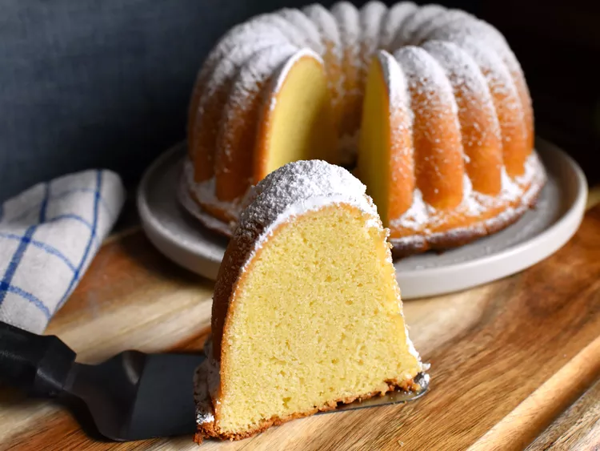

Home
Philly Fulff Cake
Recipe via Allrecipes

Description
This cake is very popular in the East Coast. Natale's Bakery in New Jersey is famous for this cake. I made a small cake but this recipe can be easily doubled and baked in a 12 cup tube or Bundt pan. The powdered sugar is a must on this cake.
Ingredients:
- 5 ounces cream cheese, softened
- 1/4 cup butter, softened
- 1/4 cup butter-flavored vegetable shortening
- 1 cup all-purpose flour
- 1 teaspoon baking powder
- 1/2 teaspoon salt
- 1 cup white sugar
- 3 large eggs, at room temperature
- 1 teaspoon vanilla extract
- 1/4 cup powdered sugar, or as needed
Steps:
- Preheat the oven to 350 degrees F (175 degrees C). Grease a tube or Bundt pan and set aside.
- Beat butter, cream cheese, and shortening together with an electric mixer in a large bowl until light and fluffy, about 5 minutes.
- Whisk flour, baking powder, and salt together in a bowl. Beat flour mixture into cream cheese mixture and mix until well combined.
- Beat in 1 egg. Add 1/2 cup sugar; mix until combined. Repeat with second egg and remaining sugar; beat in last egg. Beat in vanilla extract. Pour batter into the prepared pan.
- Bake in the preheated oven until a toothpick inserted in center comes out clean, 38 to 45 minutes.
- Cool in the pan on a wire rack for 15 minutes. Remove cake from pan and cool completely. When cake is completely cool, sift powdered sugar in a thick layer over the whole cake.
Home